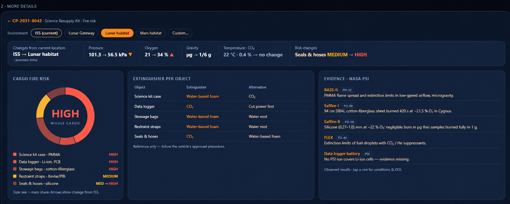

Cargo Passport / Five-Body Problem
Your cargo needs
a passport, too.
Carry the evidence. Know what still needs testing.
ISSMicrogravity reference
SCIENCE KITCASING / WIRING / BATTERY
Lunar habitatPartial gravity · new conditions
Flame in FreefallHypothetical ISS → Moon journey
Cargo Passport / Concept sequence
See the evidence
behind your cargo.
Science instrument
01 / Casing →
02 / Wiring
03 / Battery
An evidence passport
What was tested?Component identity + measured conditions
What changes?Destination + atmosphere + gravity
What is still unknown?Evidence gaps + next validation question
Compare / Trace / Take with youConcept · No safety verdict
Cargo Passport / Environment comparison
Change the environment. See what changes.

Hypothetical ISS → Lunar habitat · AI-edited mockupIllustrative ratings & response options · Not safety guidance
Cargo Passport / From research to review
NASA evidence.
A clearer next test.
NASA PSI + freefall experiments.
MAPTIS material records.*
Battery studies, NASA standards & fire-protection guidance.
*MAPTIS access and record analysis remain unverified. Source integration is planned.
Super intelligence (SI) explains condition differences, summarizes cited findings and highlights evidence gaps.
Planned: source-grounded interpretation, not a safety verdict.
Identify what still needs verification before flight.
The cargo travels. Its evidence should travel with it.
Today: interaction mockNext: verified data + grounded AI
Cargo Passport / Five-Body Problem
The cargo travels.
Its evidence should
travel with it.
NASA evidence → condition comparison → next test
QuestionsCargo Passport / Five-Body ProblemEvidence support, not certification